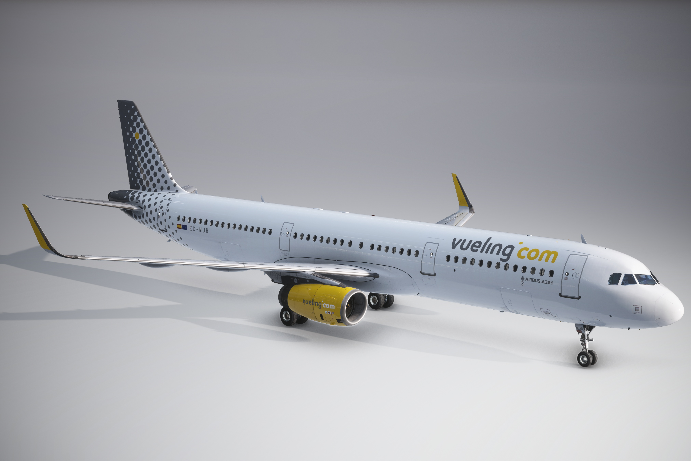
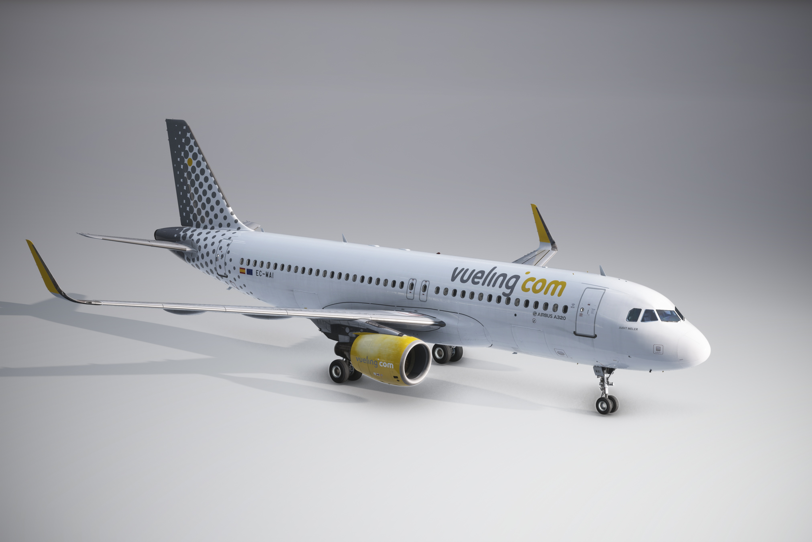
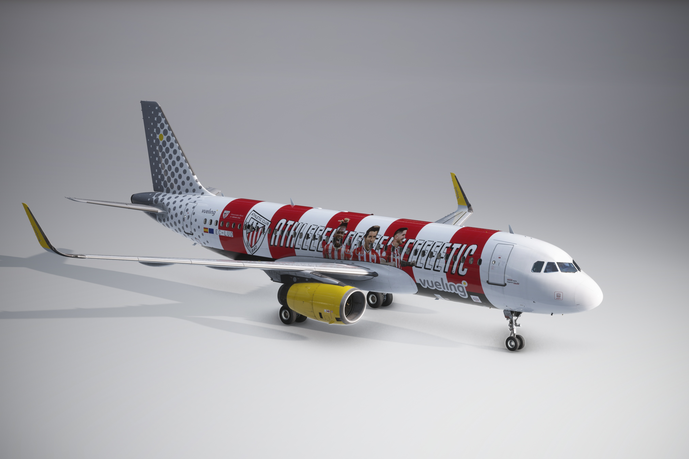
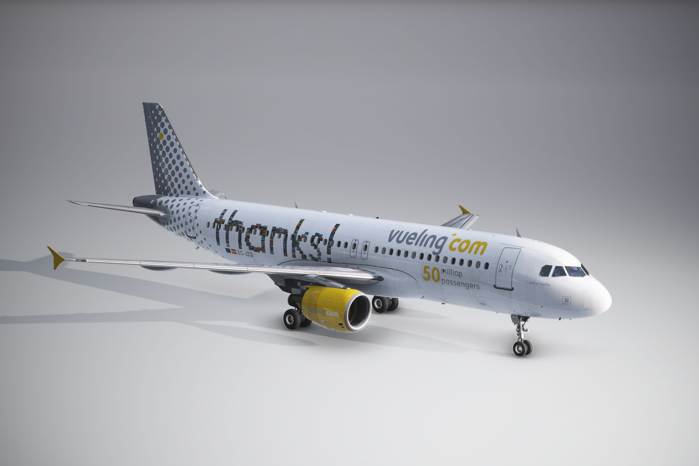
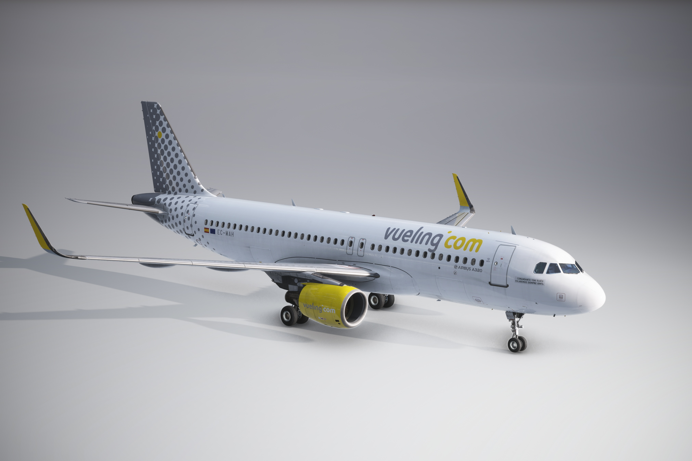
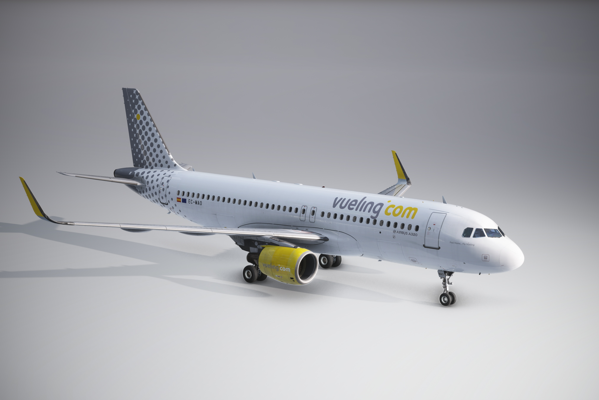
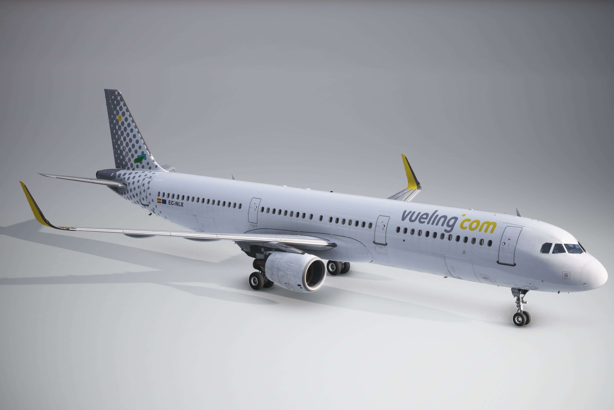
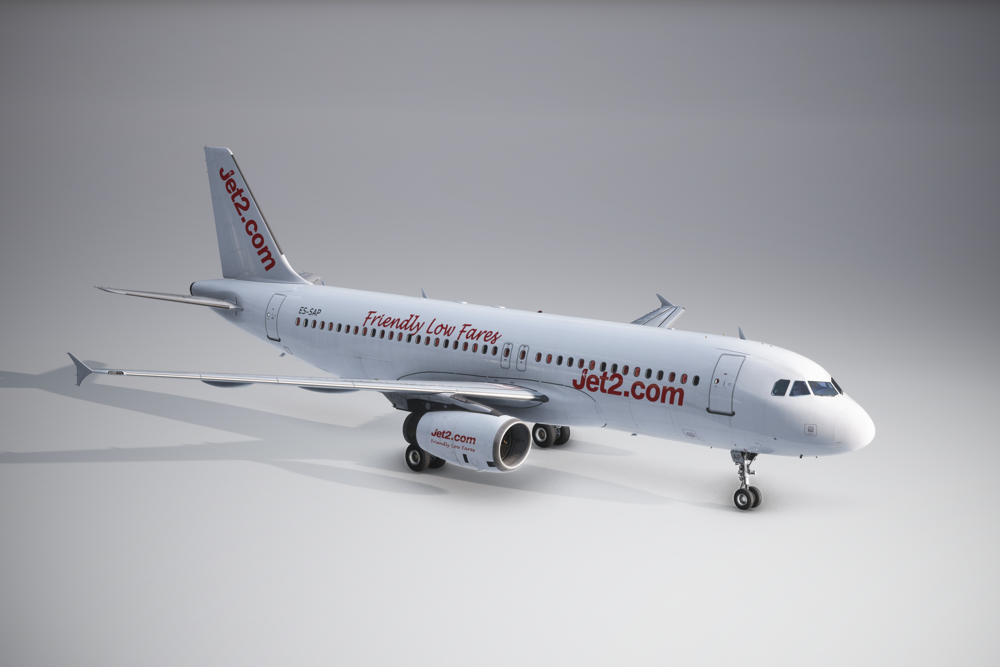
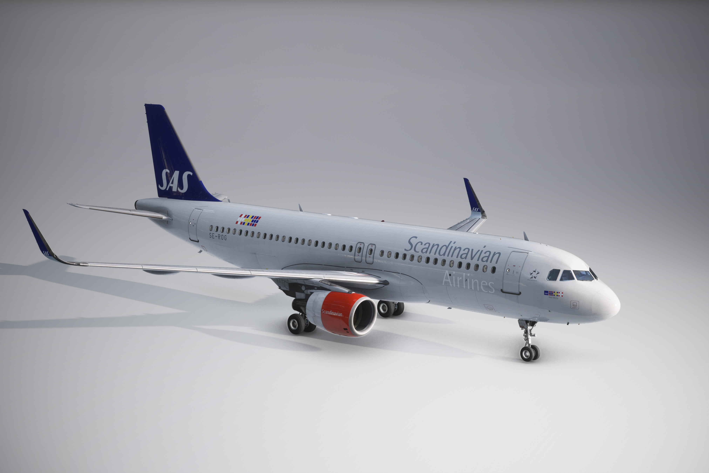

RECIÉN LLEGADO

Vueling EC-MJR
A lo grande. Llega el Airbus A321 EC-MJR con la nueva versión de interior y luciendo un exterior asombroso. Vuela esta variante con un motor medio híbrido y disfrútalo al máximo DESCARGAR
RECIÉN LLEGADO

Vueling EC-MAI
Una nueva era. El Airbus A320 EC-MAI rotulado como 'JUDIT MELER' llega con muchas sorpresas. En primer lugar, me complace presentar el nuevo diseño interior de cabina, con nuevos acabados de respaldos, cartas de seguridad, revistas de menú a borodo y mucho más, que ha sido actualizado para brindar más realismo al juego. En segundo y último lugar, el desgaste de fuselaje y los motores con ese acabado de pintura picada por los efectos del sol darán al avión un toque de profesionalidad y detallismo DESCARGAR
NUEVO

Vueling EC-LUO
Athletic Club Livery especial que rinde homenaje al Athletic Club de Bilbao. Luce los colores rojo y blanco del equipo, junto con su escudo, en una combinación única que destaca en el cielo DESCARGAR

Vueling EC-JZQ
“Gracias” Edition Diseño con el mensaje “gracias” en el fuselaje, acompañado del branding de Vueling.com.. Un repintado sencillo pero emotivo, ideal para vuelos con un toque de gratitud DESCARGAR
NO DISPONIBLE

Vueling EC-MAH
Tributo a Toni Rubio, rinde homenaje al comandante Toni Rubio con la inscripción: “Comandante Toni Rubio, volaremos siempre juntos”. Un emotivo recuerdo que acompaña cada vuelo por los cielos europeos DESCARGAR

Vueling EC-MAO
Estreno Barcelona–Tromsø El Airbus A320 EC-MAO fue el encargado de inaugurar la nueva ruta de Vueling en Diciembre de 2024 entre Barcelona y Tromsø. Esta aeronave luce la librea “Feel Home Fly Vueling” y cuenta con un interior personalizado, incluyendo reposacabezas temáticos y detalles exclusivos que celebran el lanzamiento de esta conexión especial DESCARGARVueling EC-MLD
Detalles que marcan la diferencia. El Airbus A321 EC-MLD, equipado con motores IAE, destaca por su librea Vueling de alta fidelidad y su interior personalizado. Incluye reposacabezas temáticos, tarjetas de seguridad y comida, carritos de servicio, y pegatinas reales en español e inglés. Además, luce efectos de desgaste auténticos en fuselaje y motores, ofreciendo una experiencia visual envolvente para los amantes de la simulación DESCARGARVueling EC-MOO
Realismo y detalle en cada vuelo. El Airbus A321 EC-MOO con motores IAE destaca por su librea Vueling en alta resolución y una cabina totalmente personalizada. Incluye reposacabezas temáticos, tarjetas de seguridad y comida, carritos de servicio, y pegatinas reales en español e inglés. Además, presenta efectos de desgaste auténticos en motores y fuselaje, y es compatible con GSX Passenger Seats, ofreciendo una experiencia inmersiva para Flight Simulator DESCARGAR

Vueling EC-NLX
Híbrido con historia. El Airbus A321 EC-NLX, anteriormente parte de la flota de LEVEL, ahora vuela con Vueling luciendo una librea híbrida que combina elementos de ambas marcas. Esta versión para simulador incluye texturas en 8K, pegatinas de cabina personalizadas (como la de CAT III y mantenimiento en progreso), asientos Vueling con tarjetas de seguridad y comida, y carritos de servicio. Todo ello con efectos de desgaste realistas en fuselaje y motores DESCARGAR

Jet2.com ES-SAP
Temporada británica en alta definición. El Airbus A320 ES-SAP, operado por Jet2 con motores IAE, luce una librea temporal en tonos blancos y rojos, representando fielmente el estilo de la aerolínea británica. Esta versión para Flight Simulator incluye texturas en 8K, una cabina detallada, y elementos personalizados que recrean la experiencia Jet2 al completo DESCARGAR
